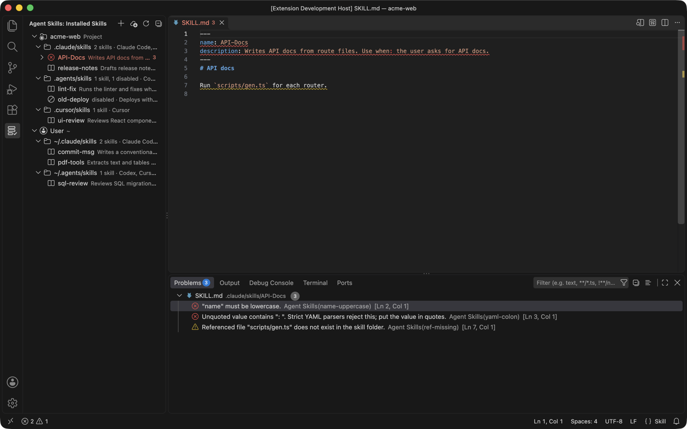

Skill Shelf (Agent Skills
Skill Shelf (Agent Skills for Claude Code, Codex, Cursor), a VS Code extension by Zovo
Skill Shelf shows every SKILL.md that Claude Code, Codex, Cursor, Copilot and Windsurf can load, in one tree, and flags the ones an agent will choke on.
Free, MIT license. Needs VS Code 1.90.0 or newer. Extension ID zovo.skill-shelf, version 0.1.0.

A real VS Code window running this extension on a sample project (three project folders, two user folders, one disabled skill). Nothing in it was edited.
- See which skills each agent picks up across 23 known folders, for the project and your home folder, without opening ten dot-folders by hand.
- Catch the mistakes that make an agent skip a skill, like an uppercase
name, an unquotedUse when:in YAML, or a missingscripts/file, with line numbers in the Problems panel. - Turn a skill off, copy it to another agent or create a new one in a click. Nothing is deleted, and it all works offline.
Quick start
- Install Skill Shelf and open a folder. Click the shelf icon in the Activity Bar to see your skills.
- Expand a skill with a red icon and click a problem to jump to that line. Right-click any skill to disable, enable or copy it.
Questions people ask
Is Skill Shelf (Agent Skills free?
Yes. Skill Shelf (Agent Skills is free and MIT licensed.
How do I install Skill Shelf (Agent Skills?
Click "Install in VS Code" above, or search for zovo.skill-shelf in the Extensions view.
Which folders it reads
The view groups skills under Project (each workspace folder) and User (your home folder). Each folder is labelled with the agents that read it.
| Folder (project) | Folder (user) | Read by |
|---|---|---|
.claude/skills | ~/.claude/skills | Claude Code; Cursor (compatibility folder); GitHub Copilot (project only) |
.agents/skills | ~/.agents/skills | Codex, Cursor, GitHub Copilot, Devin, plus Gemini CLI, OpenCode and Amp in projects |
.cursor/skills | ~/.cursor/skills | Cursor |
.github/skills | ~/.copilot/skills | GitHub Copilot |
.codex/skills | ~/.codex/skills | Cursor (compatibility folder); older Codex versions (user folder) |
.windsurf/skills | ~/.codeium/windsurf/skills | Windsurf |
.devin/skills | ~/.config/devin/skills | Devin |
| none | ~/.gemini/skills, ~/.config/opencode/skills, ~/.config/agents/skills | Gemini CLI, OpenCode, Amp |
.junie/skills, .roo/skills, .kiro/skills | ~/.junie/skills, ~/.roo/skills, ~/.kiro/skills | Junie, Roo Code, Kiro |
These paths come from each agent's documentation and from the skills CLI agent table, checked on 2026-11-05. Agents move their folders now and then. Add any folder this list misses with agentSkills.extraLocations, for example a monorepo package's .claude/skills.
Hover a skill to see its full description, its path and its symlink target. Click it to open SKILL.md.
What it checks
Problems show in the tree. For workspace skills they also go to the Problems panel, with line numbers.
- Frontmatter has to exist and be closed. YAML errors are reported, including the common unquoted
description: Use when: …that strict YAML parsers reject. nameis required, at most 64 characters, lowercase letters, digits and single hyphens, and it should match the folder name.descriptionis required, not empty, and at most 1,024 characters.compatibilityis at most 500 characters, andmetadatais a map of text values.- File references in Markdown links, images and reference definitions, plus
scripts/…,references/…andassets/…paths in the text, must exist in the skill folder. Links that leave the folder (../) get a note. - It also flags a folder without
SKILL.md, a lowercaseskill.md, an empty body, a body over 500 lines (the spec's guideline) and broken symlinks.
Fields outside the Agent Skills specification, such as Claude Code's disable-model-invocation, show as notes, not errors.
Managing skills
- Disable and Enable move the skill folder to a hidden sibling folder (
.claude/skills/xto.claude/.disabled-skills/x) and back, after a confirmation that shows both paths. No agent scans that folder, and nothing is deleted. - Copy Skill To… copies a skill to any other project or user folder. Copy
~/.claude/skills/pdf-toolsinto this repo's.agents/skillsand Codex and Cursor pick it up too. The copy never overwrites, skips.git, and copies at most 2,000 files or 50 MB. - Create Skill… asks for a folder, a name and a description, then writes a
SKILL.mdthat passes the checks. - Reveal in File Explorer and Open SKILL.md do what they say.
Installing skills from GitHub
Install Skills from GitHub… asks for a repository (owner/repo, owner/repo@tag or a https://github.com/… URL), the agents and the scope. Then it shows the exact skills CLI command, for example:
npx -y skills add vercel-labs/agent-skills -a claude-code -a cursor -gSkill Shelf never runs it for you. Copy Command puts it on the clipboard, and Paste in Terminal types it into a new terminal without pressing Enter, so you read it and run it yourself. The tree refreshes when you close that terminal. Pick "Only list the skills in this repository" to preview a repository with --list first.
The repository and skill names are limited to letters, digits and . _ - /, so the command can't carry shell syntax. The skills CLI needs Node.js 22.20 or newer. Skills can include scripts that your agent may run, so read a repository before you install from it.
Safety
- The extension makes no network calls, sends no telemetry and starts no processes.
- It reads only
SKILL.mdfiles. ASKILL.mdthat is a symlink to a file outside its skill folder is not read. - Copy skips files that usually hold secrets (
.env,.npmrc,*.pem,*.key,id_rsaand similar, plus.sshand.awsfolders) and symlinks that point outside the skill. It lists what it skipped. - Hover text escapes every name, path and description, so a skill can't inject links or images.
- In an untrusted workspace (Restricted Mode) it only lists and checks skills. Disable, enable, copy, create and install are off.
Settings
| Setting | Default | Description |
|---|---|---|
agentSkills.extraLocations | [] | Extra skills folders. ~/… and absolute paths are user scope; relative paths are resolved inside each workspace folder. |
agentSkills.showEmptyLocations | false | Also show known folders that don't exist yet. |
agentSkills.diagnostics | workspace | Which problems go to the Problems panel: workspace, all (also user skills) or off. |
agentSkills.install.disableTelemetry | false | Add DISABLE_TELEMETRY=1 to the install command. Per the CLI's README this turns off its anonymous usage data and its security-audit requests. |
Limits
- It lists skills directly inside a skills folder (
<folder>/<skill>/SKILL.md). Nested.agents/skillsfolders deeper in a monorepo aren't found on their own. Add them withagentSkills.extraLocations. - Plugin-bundled skills (for example Claude Code plugins) and Codex's admin folder
/etc/codex/skillsaren't listed.CODEX_HOMEandCLAUDE_CONFIG_DIRaren't followed. - The YAML parser is built in. It covers what frontmatter uses (maps, lists, quoted and block strings, flow collections) and reports anchors, aliases and tags without resolving them.
SKILL.mdfiles over 1 MB aren't parsed, and a folder shows at most 1,000 skills. The tree refreshes when a workspaceSKILL.mdchanges, when the window regains focus, after its own actions and when you click Refresh. Changes other tools make in user folders show up on the next focus or refresh.- Tested on macOS. The Windows path logic has unit tests, but the extension hasn't been run on Windows.
License
MIT. Not affiliated with Anthropic, OpenAI, Anysphere, GitHub, Microsoft, Vercel or any agent vendor. Product names only say which tools the extension works with.
Install Skill Shelf (Agent Skills
Click the button to open VS Code and install it, or press Ctrl+P (Cmd+P on macOS) in VS Code and run ext install zovo.skill-shelf.
Free, MIT license. Needs VS Code 1.90.0 or newer. Extension ID zovo.skill-shelf, version 0.1.0.
Source code and issues are on GitHub.